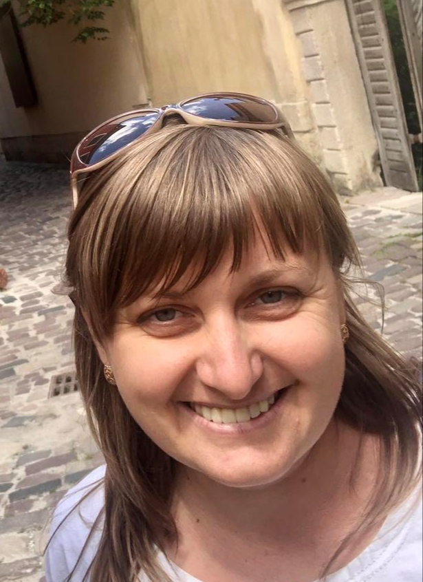

Гордєєва Юлія Валеріївна Frontend developer
Освіта: вища, технічна
Вік: 35 років
Сімейний стан: заміжня
Місце проживання: Україна, Тернопільська область, м.Чортків
Досвід роботи
-
листопад 2011р - червень 2021р
ПАТ ДТЕК "Донецькобленерго"
Інженер Макіївської групи служби інформаційних технологій- підтримка роботи бухгалтерії, юридичного та ін. відділів - обслуговування клієнтів та програмного забезпечення;
- написання модулів на VBA в Excel для автоматизації бухгалтерьских розрахунків і обробки великих масивів даних;
- ведення звітної документації відділу;
- навчання співробітників підприємства комп'ютерної грамотності та роботі на ПК;
-
липень 2011р - вересень 2011р
ТОВ "Донпромсервіс-97", Континент-Вікна, м.Макіївка
Інженер-програміст відділу АСУП- підтримка програм Framex-вікна, Framex-двері;
- підтримка 1С v 7.7;
- консультація клієнтів по телефону, дистанційна підтримка та оновлення клієнтського программного забезпечення;
-
січень 2010р - червень 2011р
Донбаська державна машинобудівна академія (ДДМА), м. Краматорськ
Асистент кафедри інтелектуальних систем прийняття рішень (ІСПР)- викладання спецдисциплін (Об'ектно-орієнтоване програмування, организація БД і знань, імітаційне моделювання, основи програмування та алогоритмічні мови, web-програмування, технології програмування та створення програмних продуктів, електронна комерція, експертні системи прийняття рішень та ін.);
- наука (участь в конференціях, написання наукових статтей в журналах ВАК, міжнародних, всеукраїнських і регіональних збірниках);
- кураторство;
- ведення переддипломної та виробничої практик;
- керівництво дипломними роботами.
-
вересень 2009р
ДДМА, м. Краматорськ
Лаборант кафедри ІСПР- підтримка комп'ютерних класів в робочому стані (ПЗ).
Освіта
-
грудень 2008 – грудень 2009Донбаська державна машинобудівна академія (ДДМА), м. Краматорськ
- факультет автоматизації машинобудування та інформаційних технологій;
- кафедра "Інтелектуальні системи прийняття рішень";
- спеціалист, кваліфікація – аналітик комп'ютерных систем;
- приймала участь в програмі "Обдаровані студенти" а також у всеукраїнських олімпіадах з інформатики.
-
вересень 2006 – січень 2009ДДМА
- факультет автоматизації машинобудування та інформаційних технологій;
- кафедра "Інтелектуальні системи прийняття рішень";
- бакалавр, кваліфікація – технік-програміст.;
-
вересень 2002 – червень 2006Машинобудівний коледж Донбаської державної машинобудівної академії (МК ДДМА), м. Краматорськ
- спеціальність "Програмування для електронно-обчислювальної техніки та автоматизованих систем";
- молодший спеціалист, кваліфікація – програміст;
- приймала участь в олімпіадах з інформатики, в 2003-2004 навчальному році зайняла 2-е місце в обласній олімпіаді з інформатики.
Курси
-
вересень 2020 – травень 2021Розробка та просування Web-проектівIT 2.0 Academy
Навички
HTML5 / CSS3 / Bootstrap / JavaScript / Vue.js / PHP / MySQL / Git / Figma / просунутий користувач ПК
Зняння мов
Українська, російська - вільно володію, англійська, німецька - початковий рівень.
Про себе
Самодисциплінована, здатна до навчання та саморозвитку, швидко адаптуюсь до нових умов, відповідальна, пунктуальна, комунікабельна, відсутність шкідливих звичок, люблю колективи та посміятись.